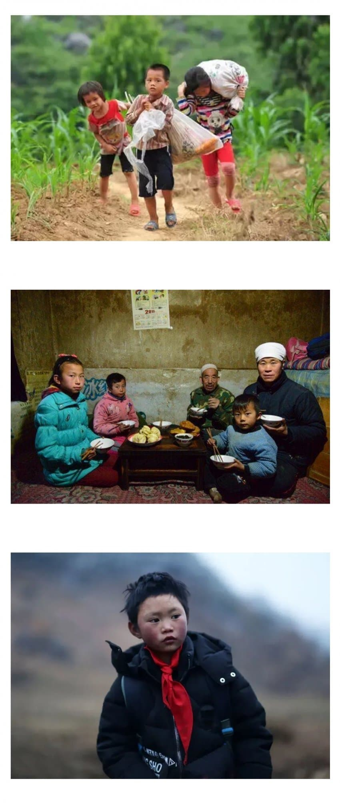
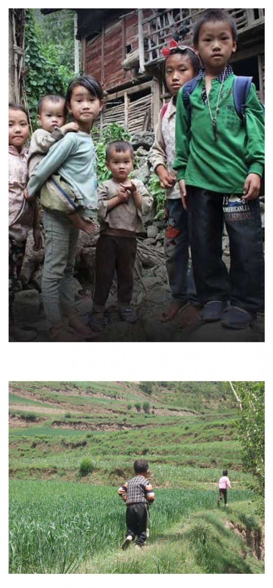
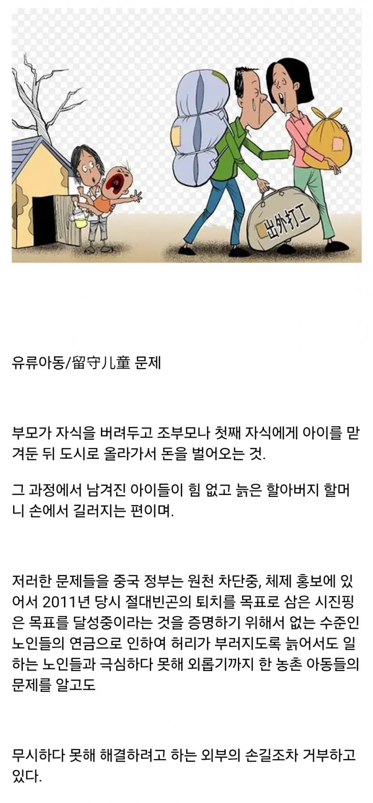
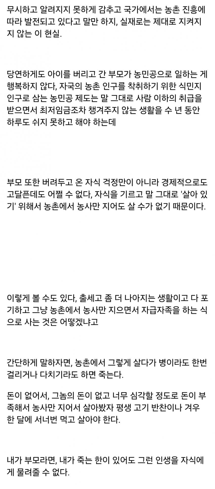
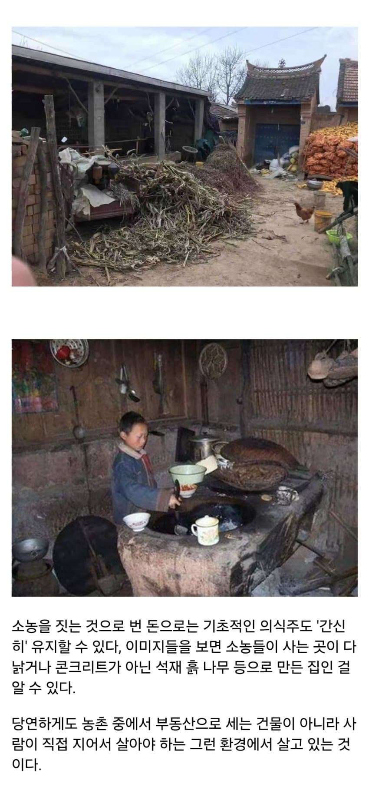
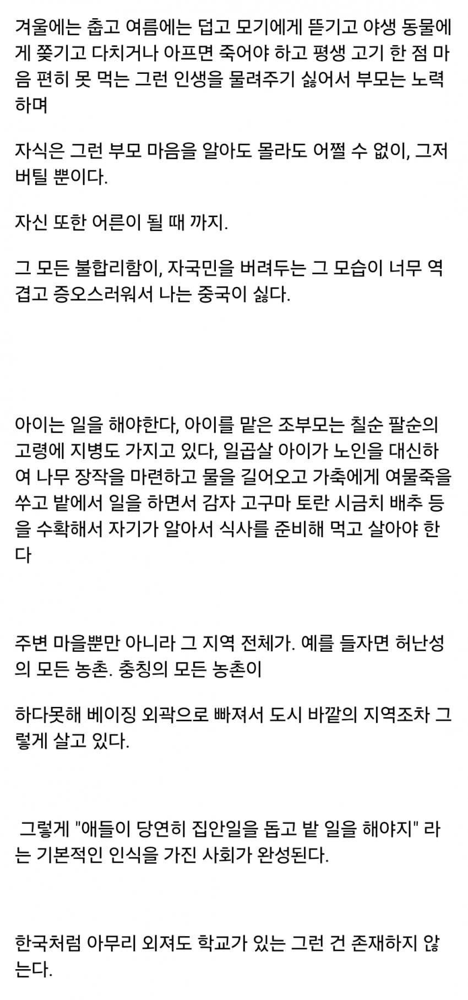
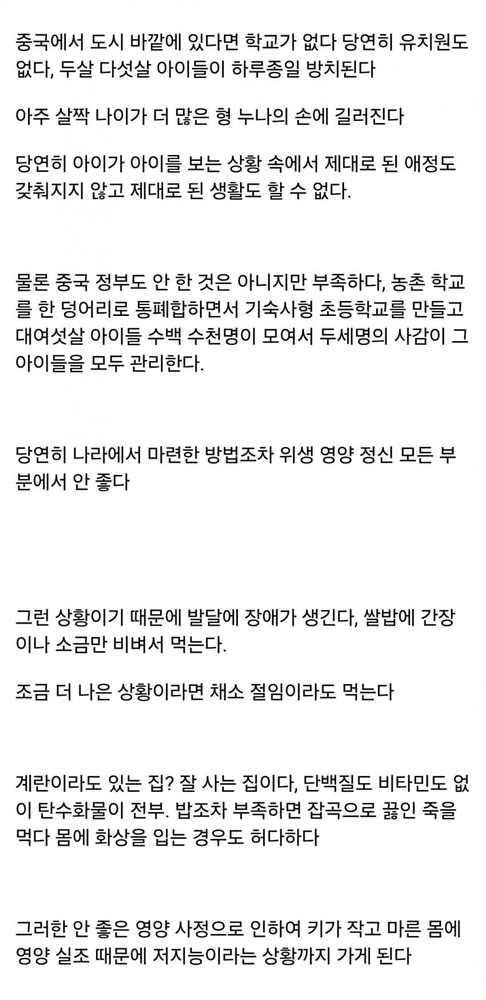
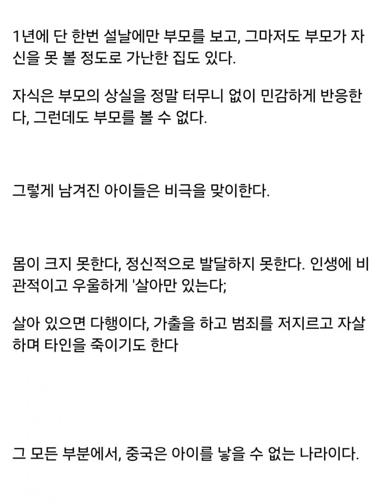

교수님에게 들은 기묘한 이야기가 있어.
음, 일단 그 교수님에게 이야기를 들었던 상황에 대해 이야기 해줄게.
교수님은 중국어학과 교수님이셔.
그런데 단순히 중국어만 하시는게 아니라
중국의 문화나 지역 역사 같은 것도 굉장히 해박하셔.
지금은 나이가 많으시지만
젊었을 때는 직접 중국 이곳 저곳을 돌아다니기도 했데.
이건 지금으로부터 몇십년전,
그러니까 교수님이 아직 젊었을 적의 이야기야
지금은 중국여행을 하는게 쉽지만
92년 한중수교 이전에는 쉬운 일이 아니었어.
중국은 공산주의국가였고
실제로 종북주의자들이 중국을 루트로 북한에 가거나
주체사상을 배워오는 경우가 왕왕있었던 모양이야.
그래서 과거에는
중국을 방문하려면 굉장히 복잡한 절차를 거쳐야 했고
비용도 장난이 아니게 많이 들었어.
그래서 교수님은 자신과 뜻이 많는 친구 두 명과 함께 조금 편법을 준비했어.
한국->중국으로 가는게 아니라
한국-> 동남아 -> 중국으로 가는 루트를 타는 거였지.
아, 오해할 사람이 있을까 싶어서 미리 말하는거야.
우리 교수님이 중국을 여행하고자 했던 것은
순수하게 학자로서의 열의 때문이었어.
당시 중국은 미지의 세계나 다름 없었고
대학생들이나 학자들도 진짜 몇십년전에 나오는 교제로 공부하고 있었데
그러다보니 중국 문화 연구는 상당히 열악할 수 밖에 없었고.
그래서 중국 여행을 계획한거지 무슨 불순한 의도가 있었던건 아니야
그런데 문제가 생긴게
처음에는 한국 -> 동남아 -> 중국으로 가려고 했는데
동남아 (라오슨가 필리핀인가 미안, 기억이 안나...)
입국 심사가 탈락한거야.
당시 한국은 못사는 나라였고 그 때문에 불법취업문제가 심했나봐.
그래서 교수님은 다시 일본을 거쳐 가는 루트를 세워.
잘은 모르지만 일본에서 동남아로 가는 것은 수월했나봐.
교수님과 친구 분들은 그 말만 믿고 일본으로 갔데.
그런데 거기서도 입국 심사 탈락......
그래서 흑흑 우린 다 망했어...이러고 있는데
재일동포 한 분이 자신과 함께 가지 않겠느냐고 제안을 했데.
그 분은 일본과 동남아를 오가면서 보따리 장사? 비슷한 걸 했는데
그 쪽 관리들이 엄청 썩어 있어서
적당히 뇌물 좀 찔러 주면 장사꾼들 세넷명 쯤은 눈감아 준다는거야.
그 말에 혹한 교수님과 친구분들은 단방에 오케이!! 하면서 따라갔데.
사실 그것 말고는 방법이 없었고 말이야.
다행이 방법이 통해서 동남아까지는 무사히 도착을 했어.
그런데 당시 무슨 일이 있어서....
(미안 교수님이 역사적 사건을 다 설명해 주면서 이야기를 해주셨는데 기억이 안나 젠장. 교양이라서 대충 들었거든)
중국 입국이 또 힘들어졌나봐.
그런데 여기까지 와서 다시 돌아갈 수는 없잖아?
악이 박친 교수님은 불법적인 루트까지 찾기 시작했고
중국까지 무사히 데랴다 준다는 브로커를 만났어.
브로커가 말한 루트는 대강 이랬어.
''''우린 강을 통해 밀림을 지난 다음에 중국 작은 마을에 도착할 거다. 거기까지 데려다 주겠다.''''
거기가 무슨 지방이라고 했더라...
어쨌든 좀 울창한 밀림지역이고 중국 공안도 잘 안찾는 오지래.
그래서 오가는게 쉬울 것이라고 하는 거야.
그렇게 교수님과 친구분들은 동남아에서 중국까지 밀입국을 시도하게 돼.
브로커는 트럭과 지게차를 번갈아서 타고 가는데
처음에는 자신을 일본의 가전제품 같은 것을 들고 가는 상인이라고 소개했데.
알다시피 공산주의 국가인 중국은 외부 고가 사치품에 굉장히 민감하거든.
하지만 상류층은 알게모르게 그런 사치품을 사 모으는 것을 즐긴데
그래서 그게 상당히 돈벌이가 된다고 하더라고.
교수님과 친구분들은 그 말만 믿고 따라갔고.
그런데 동행한지 한 4일 즘 되었을 즘에
정말 우연히 짐을 뒤지다가 그 사람이 뭘 밀수하는지 발견했데
그건 다름 아닌 ''''마약''''이었어.
일본의 전자제품을 밀수한다는 것은 순 뻥이었던거지.
이쯤되자 점점 브로커와 함께 있는게 불안하기 시작했어.
모르는 사람이 있을까 말하자면
중국은 마약에 굉장히 민감해.
아편전쟁 이후로 마약은 가지고만 있으면 외국인 내국인 할 것 없이 그냥 사형이야.
이쯤되자 교수님과 친구분들은 슬슬 불안해지기 시작했어.
만약 잘못 걸리면 자기들도 끌려가서 그 즉시 사형인데다가
그 브로커라는 사람 총도 가지고 있었거든.
만약 실수로 이상한 모습을 보였다가는 입막음을 할려고 죽음을 당했을지도 모르는 일이었어.
몇십년전 중국이라고 생각해 줘.
그 나라는 심심하면 사형 내리는 나라니까.
거기다가 밀입국자라면 얄짤없겠지.
그래서 일단 이 사람에게서 도망치자는 계획을 세웠어.
마침 밀림을 지나고 있었는데 사람도 잘 안다녀서
어디 멀리 숨어버리면 못쫓아 올것이라고 생각했거든.
그래서 새벽에 자고 있을 틈을 봐서
그냥 앞도 안보고 숲으로 도망쳤데
...
그런데 그 때 교수님이랑 친구 분들이 살고자 하는 욕구가 너무 커서 ㅋㅋㅋ
진짜 앞만 보고 도망치다보니 길을 잃었데
농담이 아니라 정신을 차리고보니 숲 한 복판이었던거야.
''''부릎뜨니 숲이었어'''' - 이거 교수님이 한 드립이야!!!
당시 교수님과 친구 분들은 그냥 숲에 숨어 있다가 왔던 길로 되돌아가면 될 거라고 생각했던거야.
하지만 오지 밀림이 그리 쉬운 곳이 아니었어.
그래서 헤매고 헤매다가 우연히 강을 발견했데
강 근처에는 보통 마을 사람들이 몰려 사니까
일단 강을 좀 따라가보자 하고는
무작장 강만 따라서 갔어
당시 교수님과 친구 분들은 먹을 만한게 전혀 없었어.
다행히 근처가 밀림이라 나무 열매라던가 물고기나 가재가 있어서
그럭저럭 배는 채울 수 있었데.
그런데 문제가 바로 ''''물''''이었어.
중국은 물이 굉장히 좋지 않아.
황하강 들어봤지? 강 자체에 뿌옇게 흙먼지가 끼어 있어.
그래서 물을 끓여 먹는 차 문화가 발달한 거래.
일단 목이 마르니까 근처의 강물을 마셨는데
이것 때문에 매일 설사에 시달렸데
급기야 탈수까지 왔고
밀림을 헤맨지 한 삼사일 쯤 후에는 정말 죽기 일보 직전이었어
그런데 운이 좋은 것인지 강을 한참 따라가던 중에
저 멀리 아이들이 발가벗고 노는 게 보였데.
죽기 일보 직전에 사람을 만나니까 너무 반가운거야.
그래서 어떻게든 도움을 청해야 겠다 싶어서
막 달려갔는데
아이들이 선생님과 친구분들을 보자마자 미친듯이 도망을 간거야.
그런데 이게 그냥 순간 놀라고 무서워서 도망치는게 아니라
무슨 맹수나 산짐승을 보고 놀라서 도망치는 것 같았데
그런데 교수님은
''''여기서 저 아이들을 놓치면 난 죽는다''''라는 생각이 불연듯 들어서
그냥 뛰는 아이들을 보고 무작정 쫓아갔어.
물론 교수님과 친구분들은 탈수로 힘이 없었지만 어른이었고
아이들을 앞지르는 것이 어려운 일은 아니었지.
그래서 아이들을 쫓아 막 달려갔는데
아이들이 갑자기 어디 벼랑 틈으로 숨은 거야.
그래서 따라가보니까 거기에 조그마한 촌락이 있던거야
그런데 그 마을이 무슨 우리나라 새마을 운동 당시 시골마을 보는 것 같았데
막 벽도 황토벽이고 지붕도 초가집이고....
갑자기 아이들이 놀라서 달려오자 마을 어른들도 놀랐는지
우르르 몰려왔나봐.
교수님과 친구 분들은 그냥 사람이 있다는 것에 반가워서
막 붙잡고 도와달라고 통 사정을 했데.
교수님도 처음에는 식인종 생각을 하셨어.
교수님은 중국 여행을 계획하셨을 정도로
왠만한 통용 중국어도 능통하고 한자도 많이 아셔.
그런데 아는 중국어를 총 동원해도 도저히 그 사람들이랑 말이 안 통하는거야.
하지만 일단 지금 꼴이 말이 아닌데다가
바디랭귀지로 힘들어 죽겠다 식으로 대강 하니까
마을 사람들이 점차 경계를 풀고 물이나 먹을 것을 가져다 줬어.
그렇게 정신을 좀 차리고 나니까 그 마을의 촌장? 비스무리 한 사람이 왔데.
이 사람이 하는 말이 너무 방언이 심해서 도저히 못알아 듣겠는거야.
분명 이게 중국어 같은데 중국어가 아닌 것 같은 그런 기분?
그런데 이 촌장이 계속 뭐 한가지만 말하더래.
''''찌뿌지워화워찌우잉?'''' -> 미안, 교수님이 대강 이런 뉘앙스라고 말만 하셨어. 그냥 알아 들을 수 없는 중국어라고 생각해줘.
그냥 무슨 말만 해도
''''찌뿌지워화워찌우잉?''
배고프다고해도
''''찌뿌지워화워찌우잉?''''
여기가 어디냐고 해도
''''찌뿌지워화워찌우잉?''''
이 말만 계속 하는 거야.
그래서 도저히 말이 안통하니까 답답해서
교수님이 메모장이랑 볼펜을 꺼냈데.
일단 그들도 어느 정도 글자는 쓸 수 있으니까
한자로 필답을 하려고 햇던거지
잘은 모르지만 과거에 언어가 안통할때
한자 문화권에서는 종종 이렇게 한자를 통해 필담을 했데/
촌로는 볼펜이랑 메모장을 신기해 하면서
뭐라고 막 열심히 썼데
그런데 웃긴게 ㅋㅋㅋㅋㅋㅋㅋㅋ
이 사람들이 쓰는 한자도 정말 듣도보도못한 한자라서
뭐라고 쓰긴 쓴 것 같은데 진짜 알아보지를 못한거야.
한 몇시간 쯤 이렇게 되니까 양 쪽 둘다 지쳐서
그냥 모든 걸 포기했어
그래서 일단은 그 마을에서 묵기로 했는데
그 사람들 조금 이상한 점이 있었데.
일단 교수님이랑 친구분들이 입고 있던 물건을 굉장히 신기하게 생각햇데
그리고 남자고 여자고 그냥 털이 수북해서 무슨 원숭이를 보는 것 같았다는 거야. (우리 주위에도 털 많은 사람들 간혹 있잖아.)
근처에 나무나 벼랑이 많아서 그런지 다들 그런데를 도구 없이 척척 올라가는 등
우리가 흔히 말하는 대륙의 기상을 보여 준 게지...
막상 먹고 자는게 해결 되니까
잊고 있던 학구열이 떠오른 교수님이랑 친구 분은 이것이 기회다 싶어서 마을 이곳 저곳을 돌아다녔데.
딱히 말리는 사람도 없고 말이야.
특히 이 사람들이 무슨 노동요? 비슷한걸 불렀는데 무슨 뜻인지도 모르겠지만 그냥 최대한 비슷하게 외웠데. 나중에 도움이 될테니까 말이야.
그렇게 며칠동안 지내다보니까 체력이 조금 회복이 됬는데
그 마을 촌장이 다시 부른 거야.
그리고는 막 열성 넘치는 바디랭귀지로 이야기를 하는데
대강 알아챈 뜻을 간추려 보면
너 괜찮다.
여기 살아라.
내 딸 준다.
였데....
잘은 모르지만 오지마을 같은 곳에서는 근친상간을 피하기 위해서
이렇게 잘못 흘러들어온 외국인과 결혼 시키는 경우가 있나봐.
그런데 이런 오지 마을에서 결혼해서 살라니 그게 무슨 소리야.
교수님은 당연히 어이가 없어서 거짓말로
자신은 이미 결혼을 했다고 대강 바뒤랭기지로 설명을 했어.
그런데 오히려 태연하게
결혼? 그게 어때서?
둘째 마누라로 내 딸을 맞아라.
라고 좀 더 강압적으로 나간거지.
그래서 슬슬 무서워진 교수님과 친구분들은
그냥 여기를 떠나겠다 라고 대강 설명을 했데
그런데 촌장은 막 화를 내면서
너네들 못가
여기서 살아
안 그럼 죽음
이라고 좀 무시무시한 얼굴로 협박을 했나봐
그래서 교수님은
아놔 ㅅㅂ 내가 여기까지 와서 또 죽게 생겼네 싶어서
다시 작당모의를 했데.
그리고는 마을 사람들이 밭일을 한 틈을 타서
또 다시 밀림으로 튀었어.
다행히 먹을 걸 좀 챙겨와서 저번처럼 마냥 굶주리지도 않았고.
잡히면 그냥 여기서 꼼짝 못한다는 생각에
무작정 또 다시 밀림으로 간 거야.
그리고 한 며칠간 밀림을 헤매고 있었는데
운좋게 숲에서 동남아 사냥꾼을 만날 수 있었데
그들에게 도와달라고 빌었고
다행히 밀림을 빠져나와 동남아에서 일본을 거쳐 무사히 한국으로 귀환할 수 있었어.
그리고 중국에서의 추억은 젊었을 적 개고생한 추억으로 한동안 남아 있었지.
물론 이야기는 여기서 끝나지 않아.
..
중국 소수민족에게 외부에서 손님이 오면 자신의 딸이나 아내를 빌려주는 일도 있었고
만약 그것을 거절하면 자신을 모독한다고 생각해 칼부림이 나는 일도 있었던 모양이야.
그 후로 교수님은 학자 활동을 하면서 몇번인가 중국을 더 방문했데.
물론 이번에는 죽도록 고생하지 않는 합법적인 루트로 말이야.
그리고 드디어 한중수교가 맺어지면서
정식으로 중국도 여행하고 문물도 주고 받는 뭐 그런 일이 일어났어.
그런데 그 즈음에 어떤 중국 교수가 중국의 지방 방언이나 한자 같은 걸 연구한다는 소식을 들은 거야.
그래서 좋은 자료같은걸 찾는 다는 이야기가 있었어,
교수님은 마침 그 때 메모장에 써놓은 한자나 자신이 들은 문화 같은 이야기를 하면 좋아하겠다 하고 연구회장에서 직접 만나서 그 이야기를 했어.
물론 그 교수는 굉장히 흥미로워했고 말이야.
그런데 그 중국교수도 메모장에 써있는 한자를 도저히 모르겠다는거야.
그래서 다른 교수에게 자문을 구하기 시작햇어.
그 중 한 교수가 주의깊게 그 글을 읽어보더니 이것을 어디서 났느냐고 물어봤어
교수님은 내가 젊었을 적에 이래저래 해서 고생해서 마을 들어갓더니 그랬습니다 ㅋ 하고 그냥 쿨하게 이야기 했데.
그런데 중국교수의 말로는 이건 그냥 소수민족 한자가 아니라는 거야.
이 한자는, 지금은 사멸한 진나라시대 때 통용되던 고대한자라는 거지.
그리고 번역해본 바에 의하면 메모장에는 진나라 한자로 빼곡하게,
''''진시황은 죽었습니까?''''
''''진시황은 죽었습니까?''''
''''진시황은 죽었습니까?''''
''''진시황은 죽었습니까?''''
''''만리장성은 얼마나 쌓았습니까?''''
''''만리장성은 얼마나 쌓았습니까?''''
''''만리장성은 얼마나 쌓았습니까?''''
''''만리장성은 얼마나 쌓았습니까?''''
라고 쓰여져 있었데................
이 사실이 알려지면서 학자들은 한번 발칵 뒤집혔는데
중국에는 전설처럼 모인(毛人)의 설화가 전해 내려온데.
일종의 상상의 동물인데..
진나라시대 때 만리장성 부역을 피해 도망친 사람들이
숲으로 들어가서 마치 원시인처럼 털로 뒤덮여서 살고 있데.
그들은 자손대대로 숨어 살면서
아직도 진나라 시대 때라고 믿고 있다는 거야,
그리고 아직도 만리장성을 쌓고 있고 자신들도 발각되면
그 부역을 해야 한다고 생각하고 있데.....
진나라가 망한 뒤에 무려 몇천년간 말이야...
그 후에 교수님은 다시 문화 연구를 위해 중국을 다니다가
어디 만주 지방 쪽을 들르셨데.
그런데 거기서 만주어랑 중국어가 굉장히 유창한 할머니 한분을 만났나봐.
만주어는 지금 사멸위기인데다가 하는 사람도 얼마 없어서 문제가 있는 언어야.
당시에도 상황이 비슷했고,
어쨌든 그 할머니를 자주 찾아뵈면서 이런 저런 연구를 하는데
어느 날 할머니가 유독 귀에 익은 노래를 하는거야.
그 때 마을에서 들었던 그 노동요였던거지.
그런데 가사가 만주어였어
뜻을 대강 해석하자면
만리장성을 쌓아라
높게높게 쌓아라~ 뭐 대강 이런 뜻이었데
그래서 할머니에게
(여기서부터는 귀찮으니 대강 대화문만 쓸게)
''''그 노래 어디서 들으셨습니까''''
''''어머니와 언니들한테 배웠다''''
''''만주 노래 인가요?''''
''''아니다, 중국인 노래다. 가사만 만주어다.''''
''''오래 불리던 노래인가요.''''
''''그렇다.''''
''''어떤 중국인이 가르쳐줬습니까''''
''''모른다. 그런데 이거 중국인이 가르쳐준게 아니다.
먼 옛날에 원숭이들이 가르쳐준 노래라고 한다.''''
라고 했데...
원숭이들이 모인을 가르키는 것인지는 교수님도 몰랐데
그냥 전설은 전설이니까.
나도 이 이야기가 진실인지 어디인지는 몰라.
하지만 교수님이 거짓말을 괜히 지어낼 분은 아니라고 생각해.
그리고 거리를 따지는 사람들이 있는데
난 오히려 그렇기 때문에 그들이 그런 모습으로 남아 있던게 아닐까 싶어.
만약 근처에 있었다면 진나라가 망한 뒤에 자연스럽게 그들도 중국대륙에 섞여 들어갔겠지.
하지만 노역을 피해 최대한 멀리 도망치다보니까
그런 오지 숲속까지 찾아 들게 되고
그렇게 오랜 시간 동안 외부와 격리된채 그런 모습으로 아직까지 살고 있는 것인지도 몰라.
일단 이야기는 여기까지가 끝이야.
스레인 이상 이 글을 믿어달라고 막 주장하지는 않겠어.
하지만 한번쯤 생각해봐.
아직도 드넓은 중국 대륙 어딘가에는
지금도 진시황이 살아있고
만리장성을 쌓고 있는 중이라고 믿는 사람들이 살고 있을지 몰라.
그들에게 있어 만리장성 노역은 몇천년간 이어지고 있겠지...
어쩌면 앞으로도 계속해서 말이야.....
내가 제일 좋아하는 괴담......오늘 이거 찾아다녔다ㅋㅋㅋㅋㅋㅋ그냥 단순히 귀신 얘기하는 것보다 이런 내용이 훨씬 좋다.
만리장성 쌓는게 고된 일이었다는 것은 두보의 시나 명나라 소설에서 잘 드러나는 요소이긴함ㅋㅋ... 근데 진짜 궁금하다. 도망간 사람들 있을 것 같긴한데 설마~ 아직까지 그런 사람들이 있을까??
내가 보기엔 지금까지는 없을 것 같고....
그냥 한 기원후 몇백? 6~7세기? 까지는 있었을 것 같긴함.ㅋㅋㅋㅋㅋ그냥 내 추측!!
아오 갑자기 이거 생각나서 구글에다가 만리장성 검색만 엄청나게 했네ㅋㅋㅋㅋㅋㅋㅋㅋㅋㅋ
라는 괴담
와 댓글 이렇게 길게도 쓸 수 있냐?
2천년대 이전에 만들어진 주작썰 같은데 일단 재미는 있네ㅋㅋㅋ
아이시발 엔터를 좀 없애던가해라 링크만 공유하던가
시벨 댓글 내리다가 동굴 탐험하는 기분 들었네
아이씨 좆같은 썰을 댓글로 달아놨어
3줄 요약 없냐
댓글창에 전세냈어!?
중국 입국하는 과정만 한페이지가 넘어 ㅅㅂ
글이 왜케 기냐했는데 너때문이었구나
그냥 게시글로 올리고 링크를주지 ㅋㅋㅋ 나려도 내려도 끝이안나서 무서웟어..
난좋았음,잘읽었어고마워
pc로봐서 그런지 재밋게봤다 땡큐 ㅋㅋ
재밌는데
댓글창 니혼자 쓰냐
피사 보면 중국은 BSJZ만 평가를 하거든? 북경시 상해시 강소성 절강성
이게 뭔말이냐 저런 나머지 곳들은 걍 땅으로서만 존재해도 상관없단 거임 ㅋㅋ
왜냐 진짜 중요한 인재랑 산업은 BSJZ 같은 동부 연안 1선도시에 있거든
인생게임에서 소농으로 사니까 사는게 사는게 아닌거같던데
중국보면 정말 상류층은 살기 좋은거 같음
상속세도 없고 빽이 있으면 막질르고 말야
물론 샤바샤바가 힘든 문제가 있지만 저기 힘든 사람들과 비교해 너무 극단적이야
갑자기 궁금해서 찾아보니
인구수 우리나라 5,170만명///중국 14억 명 ->중국이 한국보다 27배
인구 밀도 우리나라 515명/km²///중국 150명/km²->한국이 중국보다 인구 밀도가 약 3.4배
인구가 그만큼 많은데도 인구밀도는 우리가 훨씬 높네;;:중국 땅이 얼마나 넓은겨
땅도 비옥함
이런문제는 우리나라도 있음
당연히 저런문제는 전세계 어느곳에나 있거나 혹은 있었음. 한 7-80년대에 저랬으면 뭐 이해하지. 근데 중국같은 체급을 가진나라가 현시점에서도 저런 극단적인 사례가 비일비재하고 그 문제를 저렇게 방치하는건 보기쉽지는 않음. 현재 중국사회가 얼마나 기형적인 구조를 가지고 있는지 한 번 생각해볼만하단거
우리는 시골에 아이가 없어서 학교가 폐쇄 되는거라 저런 현상이 없어졌다 뿐이지 우리나라가 인구 저출산문제가 아니었으면 분명히 다른 형태로 나타났을 문제임 화살만 보는게아니라 활을 당기는 그 문제를 봐야하는거임
대한민국 만세 우리 부모님 만세
음식관련 다큐중에 농민공같은사람이 어떤 밥을 먹는지 나온적이 있는데 그냥 북한도 아니고 몇년째 짠지하나에 속없는 만두빵 두개 먹는거보고 충격받았음. 보니까 그렇다고 돈을 많이버는 것도 아니고 소수민족이면 차별도 존나 당하고 저멀리 고향떠나온 무연고자라 돈 떼먹혀도 어디 하소연도 못하고 그렇다고 고향으로 돌아가면 돈은 더 못벌고 그냥 비참함 그자체였음.
아오 시발 먼 댓글때메 스크롤이 ㅋㅋ
미안...
2026년에 중국이라는 체급에 저딴 북한같은 삶을 사는게 말이되냐.. 생각했는데 중국이니까 가능한거같다
글이 왤케 안 읽히는거 같냐
가끔 개드립에 가난한디 애 낳는건 죄악이라던 애들 있던데 그 논리에 따르먄 저 애들을 낳은 농민공들은 다 죄인인거겠군
저애들 상태보니까 진짜 죄네;
저런 인민을 10억이나 갈아버리니 규모만으로는 세계 2위의 경제대국인데 최첨단부터 저가 제조업까지 싹다 빨아들여버리는게 가능해지는 아이러니함
걍 식민지랑 선진국이 따로잇다니까
애초에우리나라랑비교해서땅크기가90배이상차이가나는데다가
대도시와깡촌물가가10배차이나는거면그냥저기는
다른나라들90개가모여있는연합이라고생각하면쉽다ㅋㅋ
캡틴따거 같은 유튜버들 많이 찾아가던, 3시간 동안 계단 타고 올라가야 하는 산동네 애도 대학 갔던데 가기보다 더 한 시골짝 이야긴가??
중국은 주요도시 빼고 나머지는 식민지네. 대한민국은 지방자치 때문에 이정도라도 시골에 신경 쓰는거고 중국은 독재니까 눈치 아예 안 보는 거지
나도 저렇게 컸는데
힘들었지
땅이 워낙 넓으니..
산골 들어가서 만난 중국인이 '진시황은 아직 살아있습니까?' 하고 물어봤다는 괴담도 있었는데